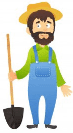

| 🐾 Mascotas 🐾 Animales de granja 🐾 Servicios del campo 🐾 Material de Apoyo |
MISIÓN
|
Ser la plataforma líder en Colombia en el ámbito del cuidado y bienestar animal. Nos dedicamos a empoderar a los campesinos mediante la entrega de conocimientos prácticos, fomentando la colaboración entre comunidades y promoviendo un trato ético y responsable hacia los animales. |